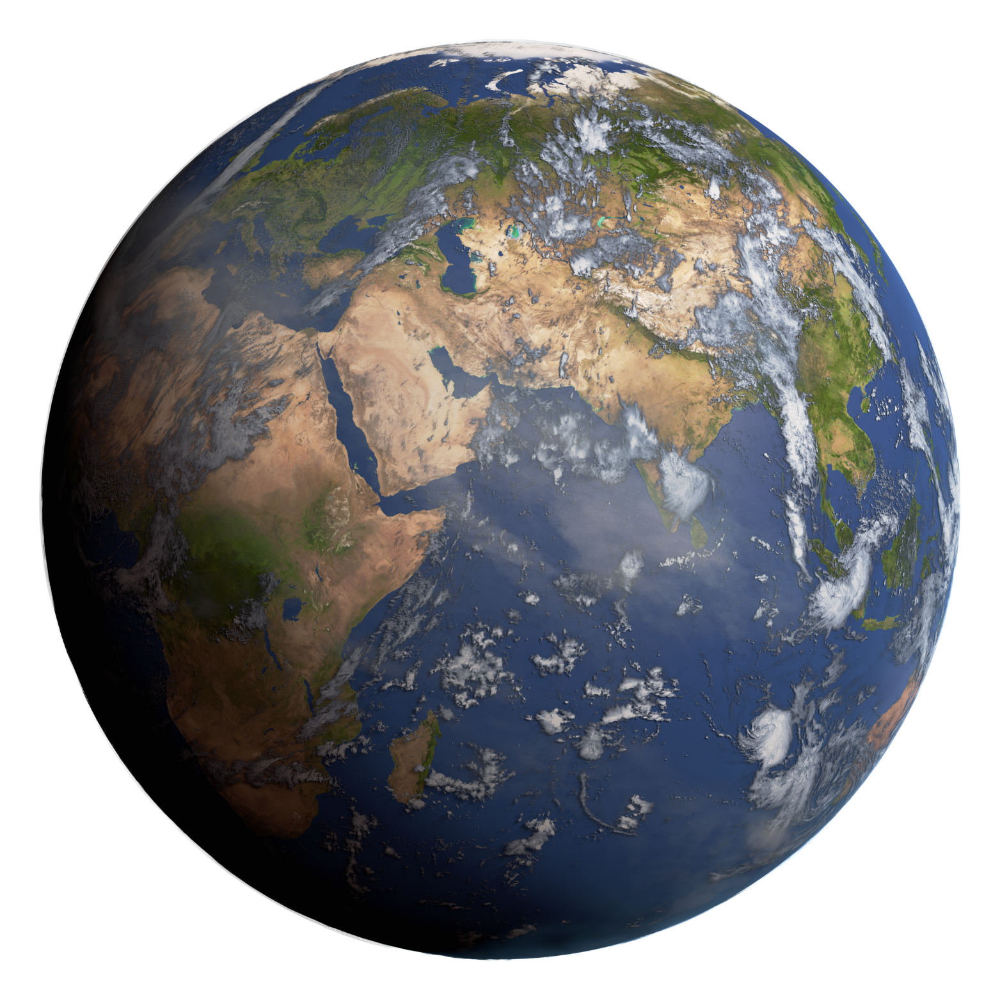

Planeta Terra
Visão Geral
A Terra é o terceiro planeta a partir do Sol, o mais denso e o quinto maior dos oito planetas do Sistema Solar. É também o único corpo celeste conhecido por abrigar vida. Sua superfície é coberta por 71% de água, o que lhe confere a aparência de "planeta azul".
Curiosidades
- É o único planeta que não recebeu o nome de uma divindade greco-romana.
- A rotação da Terra está diminuindo gradualmente.
- Possui um poderoso campo magnético que nos protege do vento solar.
Dados Técnicos
| Característica | Valor |
|---|---|
| Diâmetro Equatorial | 12.742 km |
| Distância do Sol | ~ 149.6 milhões km |
| Duração do Dia | 23 horas e 56 minutos |
| Duração do Ano | 365.25 dias |
| Satélites Naturais | 1 (A Lua) |